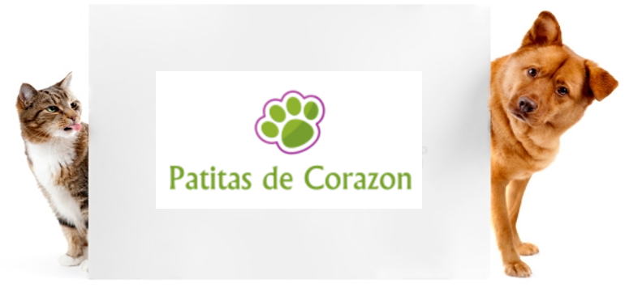
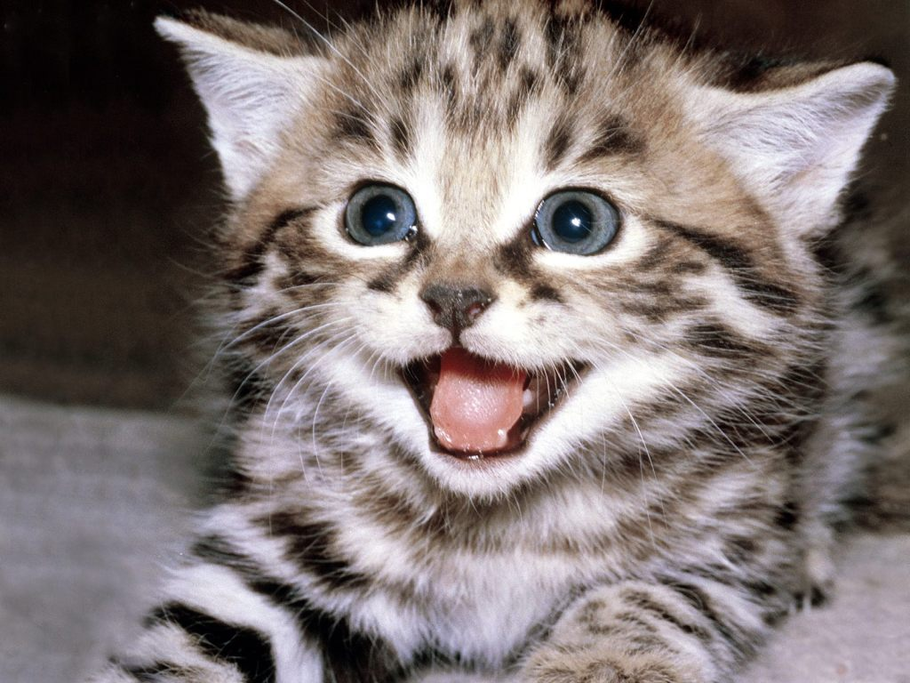

Inicio
Nosotros
Gatos
Perros
Adoptar
Contacto
Galería de Gatos para adoptar:
Kindred 3 Meses
Adoptar
Kira 3 Meses y medio
Adoptar
Luna 2 Meses
Adoptar
Pinky 1 Mes y medio
Adoptar

Yacko 2 Meses
Adoptar